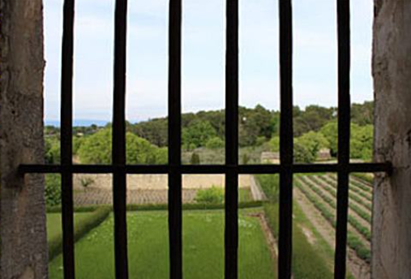

Yıldızlı Gece Tablosu

Yıldızlı Gece'nin Doğuşu
Van Gogh Yıldızlı Gece’yi, çeşitli zihinsel rahatsızlıkları nedeniyel tedavi gördüğü akıl
hastahanesinde çizdi. Yıldızlı Gece, Van Gogh’un kaldığı akıl hastanesindeki odasından görülen
Saint-Remy-de-Provence şehrinin düşsel bir yorumu olarak tanımlanır. Uzun araştırmalar sonunda,
tablonun 25 Mayıs 1889, saat 04:40’taki gökyüzünü gösterdiği tespit edilmiştir. Ay’ın henüz ilk
hilal biçiminde olması ve Venüs gezegeninin ufukta görüntülenmiş olmasından yola çıkılarak tablodaki
yıldız ve gezegenlerin gün doğarken resmedildiği anlaşılmıştır. Ayrıca bunda ressamın yine o tarihte
yazdığı bir mektup da önemli veriler içermektedir.Van Gogh, kardeşi Theo Van Gogh’a yazdığı mektupta
bu resimle alakalı şöyle diyor:
Demir parmaklıklı penceremde adeta bir buğday tarlası görüyorum. Sabahları ise gün doğumunu tüm
ihtişamıyla izliyorum.

Resimde görülen manzara, Van Gogh’un akıl hastanesindeki odasından görülen şehir manzarası olsa da sanatçı resim yaparken gerçeğe pek sadık kalmamış, hayal gücünü resme aktarmış. Resimde görülen köy ve kilise kulesi ise tamamen sanatçının hayal gücüyle yaratılmış unsurlar. Asıl manzarada böyle bir köy ve kilise görülmemektedir. Sanat tarihçileri Van Gogh’un, bu unsurları memleketi Hollanda’nın mimarisinden esinlenerek çizdiği görüşündeler. Ayrıca ressamın akıl hastanesinin penceresinde yer alan demir parmaklıkların da resimde yer almadığını farketmişsinizdir. Buradan da onun özgürlüğe duyduğu hasreti fırçasıyla tuvale işlediğini gözlemleyebiliriz. Resmi biraz incelediğimizde gözümüze bir selvi ağacı çarpıyor. Bu ağaç genelde mezarlıklarda bulunur ve ölümü çağrıştıran bir havası vardır.
Yıldızlara bakmak beni daima hayal dünyasına daldırır. Kendime sorarım, Fransa haritasındaki
noktalar arasında seyahat edip belli bir noktaya ulaşıyoruz da neden gökyüzündeki bu parlak
noktalara ulaşamıyoruz? Nasıl trene atlayıp Tarascon’a ya da Rouen’e gidiyorsak yıldızlara
ulaşmak için de ölebiliriz.
Van Gogh’un zor hayatını, ruhsal gel-gitlerini ve çaresizliklerini duygusal kırılganlığı olarak
harmanladığı bu eser; onun için bir umut arayışı mı yoksa huzura olan özlemini mi simgeliyordu, tam
olarak bilinemeyecek. Fakat, gecenin masmavi karanlığında parlayan ay ve yıldızların altındaki bu
kasaba manzarası tüm zamanların hafızalarda en çok yer eden görüntüsü olarak kalacaktır.